Experiment No.5 Flow through Packed Bed Background and Theory
- Rate of fluid flow
- Viscosity and density of the fluid
- Closeness and orientation of packing
- Size shape and surface of the particles
.gif) ---------(1)
fp is the friction factor for a packed bed called as modified friction factor.
Where
---------(1)
fp is the friction factor for a packed bed called as modified friction factor.
Where.gif) ---------(2)
With
---------(2)
With .gif) = the pressure drop
= the pressure dropL= the height of the bed
.gif) =the fluid viscosity
=the fluid viscosity.gif) =the fluid viscosity
=the fluid viscosityV0= the fluid superficial velocity
Dp =the particle diameter
.gif) = the density of the fluid
= the density of the fluid.gif) = sphericity of the particle.
= sphericity of the particle.Ergun equation was obtained by fitting the data for spheres,cylinders and crushed solids such as coke and sand. For Raschig rings and Berl saddles, which have porosities of 0.55 to 0.75, Ergun equation predicts pressure drops lower than those found experimentally. It also does not apply well to other tower packings of high surface area and high porosity.
The Ergun equation tells us a number of things. It tells us the pressure drop along the length of the packed bed given some fluid velocity. It also tells us that the pressure drop depends on the packing size, length of bed, fluid viscosity and fluid density.
.gif) This is called the Kozeny-Carman equation and is a laminar flow equation, to be
used when NRep is less than about 1.For a given system it indicates that the pressure
drop is directly proportional to the flow rate.
For large Reynolds numbers,above about 1000,the first term on the right hand side
of Eq.(1) fades out as viscous forces become negligible and inertial forces control ,
Then
This is called the Kozeny-Carman equation and is a laminar flow equation, to be
used when NRep is less than about 1.For a given system it indicates that the pressure
drop is directly proportional to the flow rate.
For large Reynolds numbers,above about 1000,the first term on the right hand side
of Eq.(1) fades out as viscous forces become negligible and inertial forces control ,
Then
.gif) This is called Blake Plummer equation.For large Reynolds numbers,above about
1000 pressure drop is propotional to square of velocity.
In addition to Ergun’ correlation, another model, the Leva’s equation is
commonly utilized in the prediction of pressure drop versus flow rate. Leva’s
equation, based on the study of single incompressible fluids through an
incompressible bed of granular salts, is relatively similar to the structure of the
Ergun equation.
Commonly used Tower packings
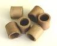
Raschig rings
This is called Blake Plummer equation.For large Reynolds numbers,above about
1000 pressure drop is propotional to square of velocity.
In addition to Ergun’ correlation, another model, the Leva’s equation is
commonly utilized in the prediction of pressure drop versus flow rate. Leva’s
equation, based on the study of single incompressible fluids through an
incompressible bed of granular salts, is relatively similar to the structure of the
Ergun equation.
Commonly used Tower packings
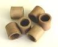
Raschig rings
 Pall rings
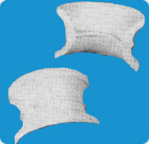
Intalox saddles
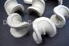
Berl saddles
Pall rings
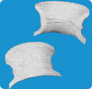
Intalox saddles
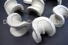
Berl saddles

:
Flow through packed bed
Data :
Nominal pipe(column) diameter =
Actual pipe(column) diameter = D = m
Length of the packed bed = L = m
Density of fluid =  manometer across the packed bed. Open the main valve and allow the
fluid to flow through the bed. = kg/m3
Viscosity of fluid= = cp
Density of CCL4 = CCL4 = kg/m3
Density of Hg = Hg= kg/m3
Observations:
Volume of voids = m3
= Sphericity =
Specific surface area = S = m2/m3= surface area/Unit bed area
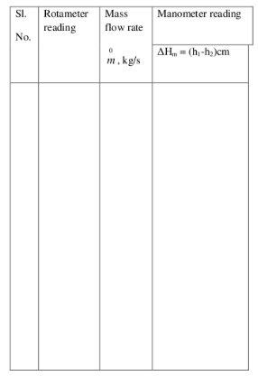
Calculations:
Flow rate:
Pressure drop
manometer across the packed bed. Open the main valve and allow the
fluid to flow through the bed. = kg/m3
Viscosity of fluid= = cp
Density of CCL4 = CCL4 = kg/m3
Density of Hg = Hg= kg/m3
Observations:
Volume of voids = m3
= Sphericity =
Specific surface area = S = m2/m3= surface area/Unit bed area
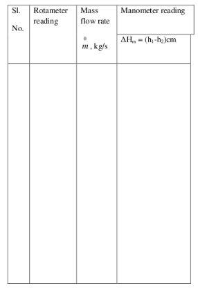
Calculations:
Flow rate:
Pressure drop  in cm of manometric fluid =
Bed Porosity = = void volume/volume of bed
Cross sectional area of the bed = 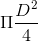= m2
Volume of bed = *L=m3
in cm of manometric fluid =
Bed Porosity = = void volume/volume of bed
Cross sectional area of the bed = 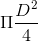= m2
Volume of bed = *L=m3
Equivalent diameter of the particles, Dp=6(1-)/*S= m
Mass flow rate =  = Volumetric flowrate * density
Superficial mass velocity, G0=/cross sectionalarea of tower= kg/s.m2
= Volumetric flowrate * density
Superficial mass velocity, G0=/cross sectionalarea of tower= kg/s.m2
.gif)
.gif) m & are density of manometric fluid and density of fluid .
m & are density of manometric fluid and density of fluid .
.gif) = N/m2
Modified Reynolds number,
NRep=Dp*G0/
= viscosity of fluid
= N/m2
Modified Reynolds number,
NRep=Dp*G0/
= viscosity of fluid
 Plot vs G0 on log - log Graph
Find the slope = n
Then
Calculate Modified friction factor
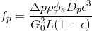
Verify Ergun’s Equation given below
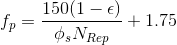
Plot fpvs 1/NRep on an ordinary graph sheet. Find the slope and intercept.
Check for the validity of Ergun’s equation
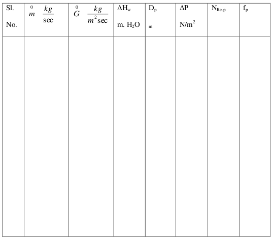
Plot vs G0 on log - log Graph
Find the slope = n
Then
Calculate Modified friction factor
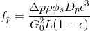
Verify Ergun’s Equation given below
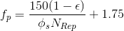
Plot fpvs 1/NRep on an ordinary graph sheet. Find the slope and intercept.
Check for the validity of Ergun’s equation
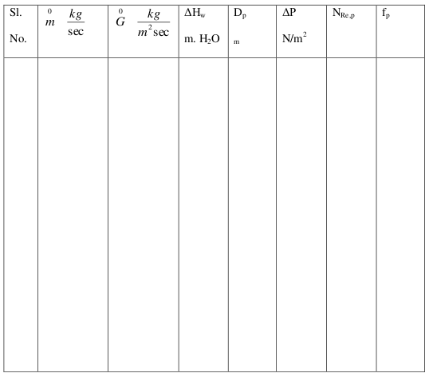
plot ftheo vs NRep on a log-log graph.
Results:
Comment on effect of modified Reynolds number on modified friction factor.
Comment on effect of superficial mass velocity on process drop across the bed and report n.


download (matlab files)

1.
Derive the Ergun’s equation for pressure drop in packed bed. What are the assumptions made?
What are the limitations for the application of Ergun’s equation?
2.
Define sphericity, equivalent particle diameter and specific surface area.
3.
Packed bed is composed of cubes 0.02 m and the bulk density of the packed bed is 980
kg/m3. The density of the solid cubes is 1500 kg/m3.
a.) Calculate the void fraction () and effective diameter (Dp).
b.) What is the void fraction if the cubes are replac
ed with cylinders that have a diameter
0.02 m and a height 0.02 m, all other parameters remaining the same

1. Warren Lee McCabe, Julian Cleveland Smith, Peter Harriott ,Unit operation of chemical engineering , 5th Edition,1993 2. Coulson and Richardson,Chemical Engineering Volume II ,Pargamon Press 5th edition.1977 3.Perry's Chemical Engineers' Handbook (7th Edition) Edited by Perry, R.H.; Green, D.W. © 1997 McGraw-Hill 4. A. S. Foust, Principles of Unit Operations, 2nd ed. John Wiley and Sons, Inc., 1980 5. Lecture notes by M.Subramanian http://www.msubbu.in/ln/fm/